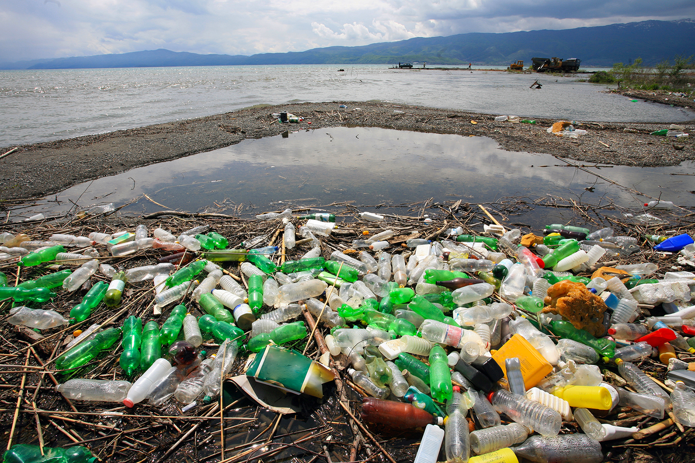

Contaminación atmosférica
Consiste en la liberación de sustancias químicas y partículas en la atmósfera alterando su composición y suponiendo un riesgo para la salud de las personas y de los demás seres vivos. Los gases contaminantes del aire más comunes son el monóxido de carbono, el dióxido de azufre, los clorofluorocarbonos y los óxidos de nitrógeno producidos por la industria y por los gases producidos en la combustión de los vehículos. Los fotoquímicos como el ozono y el esmog se aumentan en el aire por los óxidos del nitrógeno e hidrocarburos y reaccionan a la luz solar. El material particulado o el polvo contaminante en el aire se mide por su tamaño en micrómetros, y es común en erupciones volcánicas. La contaminación atmosférica puede tener un carácter local, cuando los efectos ligados al foco de emisión afectan solo a las inmediaciones del mismo, o un carácter global, cuando las características del contaminante afectan al equilibrio del planeta y zonas muy distantes a los focos emisores, ejemplos de esto son la lluvia ácida y el calentamiento global.
Contaminación hídrica
Se da por la liberación de residuos y contaminantes que drenan a las escorrentías y luego son transportados hacia ríos, penetrando en aguas subterráneas o descargando en lagos o mares. Por derrames o descargas de aguas residuales, eutrofización o descarga de basura. O por liberación descontrolada del gas de invernadero CO2 que produce la acidificación de los océanos. Los desechos marinos son desechos mayormente plásticos que contaminan los océanos y costas, algunas veces se acumulan en alta mar como en la gran mancha de basura del Pacífico Norte. Los derrames de petróleo en mar abierto por el hundimiento o fugas en petroleros y algunas veces derrames desde el mismo pozo petrolero.
Contaminación de los océanos.
Las causas del deterioro del hábitat costero son la deforestación, los vertidos químicos industriales, fertilizantes y pesticidas, vertidos de petróleo, aguas residuales y la sobrexplotación pesquera.

Contaminación del suelo
Ocurre cuando productos químicos son liberados por un derrame o filtraciones sobre y bajo la tierra. Entre los contaminantes del suelo más significativos se encuentran los hidrocarburos como el petróleo y sus derivados, los metales pesados frecuentes en baterías, el Metil tert-butil éter (MTBE),14 los herbicidas y plaguicidas generalmente rociados a los cultivos industriales y monocultivos y organoclorados producidos por la industria. También los vertederos y cinturones ecológicos que entierran grandes cantidades de basura de las ciudades. Esta contaminación puede afectar a la salud de forma directa y al entrar en contacto con fuentes de agua potable.
Contaminación por basura
Las grandes acumulaciones de residuos y de basura son un problema cada día mayor, se origina por las grandes aglomeraciones de población en las ciudades industrializadas o que están en proceso de urbanización. La basura es acumulada mayormente en vertederos, pero muchas veces es arrastrada por el viento o ríos y se dispersa por la superficie de la tierra y algunas veces llega hasta el océano.
Chatarra electrónica
Desechos electrónicos o basura tecnológica compuestas por residuos de aparatos eléctricos y electrónicos.
Basura espacial
Esta basura que orbita alrededor de la Tierra se compone de restos de cohetes y satélites viejos, restos de explosiones y pequeñas partículas artificiales. Esta basura puede generar serios daños en los satélites en funcionamiento, ya que los impactos a velocidades orbitales pueden transformar a los satélites funcionales en más basura espacial produciendo un proceso llamado Síndrome de Kessler.
Contaminación radiactiva
Resultado de las actividades en física atómica desde el siglo XX, puede ser resultado de graves desperfectos en plantas nucleares o por investigaciones en bombas nucleares, también por la manufactura y uso materiales radioactivos. (Ver emisores de partículas alfa) La Contaminación radiactiva se trata más ampliamente en este artículo en la sección Radiación ionizante.
Contaminación genética
Es la transferencia incontrolada o no deseada de material genético (por medio de la fecundación) hacia una población salvaje. Tanto desde organismos genéticamente modificados a otros no modificados, o desde especies invasivas o no nativas hacia poblaciones nativas. La contaminación genética afecta el acervo génico (patrimonio genético) de una población o especie, y puede afectar la biodiversidad genética de una población o especie. Por ejemplo si a los organismos genéricamente modificados (OGM) se les permite reproducirse con organismos no modificados (no-OGM) se producirá la contaminación genética, y como resultado:15 1) Los OGM pueden llevar a los no-OGM a la extinción. 2) Sus genes se pueden mezclar y no podrán mostrar sus características. 3) Y existen posibilidades de que los no-OGM desarrollen habilidades para tolerar los pesticidas y herbicidas lo que generaría una pesadilla para los granjeros.transportarse en estos vehículos de dos ruedas.


 1
1 3
3 6
6 7
7